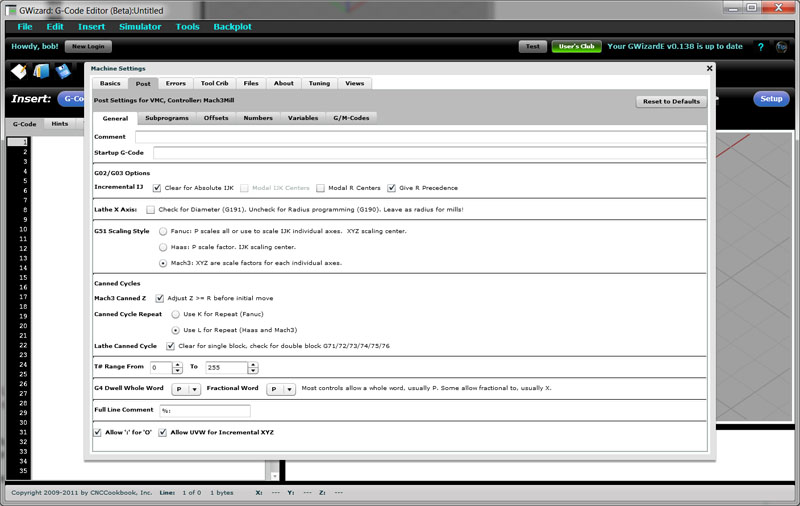

What folks are saying about G-Wizard Editor
"It is by far the neatest editor that I have ever come across."
"Bob, love the basic concept of the GWiz E."
"Wonderful -- this is going to be really helpful!"
"Having GWE would have saved me several weeks in my CNC class"
"The best I’ve seen in my search for practical CNC programming aids"
"I would like to purchase your product soon because I really think it is outstanding."
" Neat program so far. Nicely done."
|
Powerful G-Code Editor
GWE includes a modern GUI editor, with all the functions you would expect, including:
- Cut, Copy, Paste, and Select All
- Unlimited Undo/Redo
- Find and Replace
- Jump to N# Line
- Jump to physical line in the file
All commands are available from the keyboard for speed, and from the menus and toolbars for ease of use.
Tell at a glance what line you're on, as well as which lines have errors using the line number gutter on the left.
More...
Silky Smooth Backplot Viewer and Simulator
Why run g-code on your expensive CNC machine without getting a second opinion on what it will do?
Everything you need to verify your g-code part program is doing the right thing is right there when you need it. Our Backplot Viewer provides a full graphical CAD-style view of what the toolpath is doing. Rotate it, pan it, or scale it to see the details. Our Simulator lets you step through the code, check the modes and state throughout, and determine what the program will do. The simulator is driven by a Post-Processor ("Post") just like your CAM program so you can set it up to match the g-code dialect your CNC controller can execute.
GWE Backplot and Simulator...
- Multiple views including Top, Front, Right, and Perspective, just like your CAD/CAM program
- Simulated 3D toolholder makes the action come alive
- Panning, zooming, and rotation
- Playback in the simulator with the familiar Cycle Start, Feedhold, Single Block, and Rewind commands
- Run to next block, next toolchange, next rapid, next subprogram operation, and a lot more
- Variable playback speed from 0 - 100%. Move quickly to get to the part that's interesting and then slow it down to understand what's happening
- Graphical backplot animates during playback so you can keep track of where you are
- Detailed feedback of coordinates, spindle rpm, feedrate, and coolant status during playback, just like on your CNC machine
- Detailed feedback of g-code modes at each step during playback, such as whether G17, G18, or G19 plane is selected
- Work offsets G54-59 all the way through extended work offsets G54.1 P1 - P300
- G52 Local Work Shift
- G92 Coordinate System Setting
- G51 Coordinate Scaling
More...
G-Code Wizards
G-Code Wizards give you the fastest power tool for creating accurate g-code ever. You can access them via keyboard for speed, and toolbar buttons and pulldown menus for ease of use. They prompt you through which G or M-code to use as well as any parameters they may take.
G-Code (F)eeds and (S)peeds Wizard with Integrated G-Wizard Calculator...
Wizards are provided for:
- Motion Functions: G0/G1/G2/G3, etc.
- Coordinate Transformations: G17/18/19 plane selection, G20/21 units, Work offsets, etc.
- Canned Cycles: Quick, what does G82 do and what are all the parameters? The Wizards know so you don't have to.
- Tool Compensation: Length comp, cutter comp, we got you comped!
- Scaling
- M-Codes
- Macro # Variables: Which is which? Look them up on the fly.
- Feeds and Speeds Wizard with full G-Wizard Calculator integration.
- Tool Change Wizard with full Tool Crib support. Pick by name instead of just the number.
More...
Hints: Because You Need the 411
What if you had an experienced g-code expert looking over your shoulder all the time, but he only talked to you? Hints give you a variety of, well, hints that tell you what your g-code is doing. Hover your mouse over a line number, and you'll see the hints for that line. There is a hint window below the backplot that shows you the hints for the line the cursor is on at all times. Or, switch to the "Hints" tab and see all the lines laid out as hints.
Hints: Powerful diagnostics and translation of g-code to simple English...
Hints tell you what's going on, and they tell you where there are errors in the g-code. Line numbers turn red to show you where the errors are, or you can click to see just the lines with errors in them so you can breeze through to get them fixed.
Here are just some of the Hints features in GWE:
- "Info" tab gives you the big picture about your whole program. What are the extents? How many lines are there? How many errors? How many g-codes of each type are used?
- Each word type (each letter) has its own hints and error checking tailored to how that word works
- Each register associated with each word has its own hints and error checking so you know exactly what the parameter does and what's wrong when it isn't set up quite right for your controller.
- Hints checking makes sure you don't have the wrong operations together on a block. It makes sure operations are executed in the right order across blocks.
- It looks for obvious problems like beginning to cut with no tool in spindle, without having started the spindle rotating, or without having set a feedrate.
- It checks out canned cycles to make sure you have the parameters right and aren't missing any required parameters.
- It tells you the endpoint for every motion, the centers of arcs, and the radius of each arc.
That plus a whole lot more!
Revisions: A New Way to Think About Formating G-Code
You've just been handed a part program that's completely the wrong format for your controller. Or, you just got a machine with a new controller and you're having a terrible time shifting your "personal g-code dialect" to the new controller. Maybe the last programmer was just sloppy with the program, or maybe you have to reverse engineer and maintain some program from the Dark Ages.

G-Wizard's Revision Tool...
You need GWE's Revisions Tool:
- Revise large areas of code selected by the mouse
- Automatically revise each line as you editor it, every time, without your having to remember
- Control the user of spaces and capitalization
- Change one address to another, or swap two addresses throughout the code
- Change arc formats or convert arcs to line segments
- Get total control over comment formats, or remove them altogether to save controller memory
- Add or remove cutter compensation
- Feed and speed overrides
- Get total control over how numbers are formatted including digits to the left or right of the decimal, use of the decimal, and +/- signs
- Rotate, scale, or shift blocks
- Swap one tool for another and update the feeds and speeds
All these functions and more are available via menu, toolbar, and keyboard shortcut to help you control the format of your part program.
"Post"-style Setup Options Tailored to Your Controller
GWE knows what your CNC controller likes. It has a full "post" capability just like your CAM program so it knows what errors to look for and how to format g-codes going in to your controller. We won't bore you with the details except to say they are comprehensive and easy to use.

GWE includes a CAM-like Postprocessor or "Post" you can tailor to your controller's capabilities...
In addition to being able to tailor a custom post to your machine's capabilities, we offer pre-configured downloadable posts to get you going sooner.
More...
Tool Crib with Tool Data Management Functions
Tool Changes and Tool Crib, so you can connect the two!
The first thing you have to do to run a job is line up the right tools from the Tool Crib. Why not have GWE help you with that work?
It's Tool Crib lets you create unlimited cribs. Set them up for machine changes, tooling carts, your central tool crib, even create one for tools that need sharpening, new inserts, or rework. You can move tools around from crib to crib. You can track their names, specifications, and serial numbers. If you go to the presetter, you can enter values for X compensation (cutter compensation) and Z compensation (tool length compensation).
Now here comes a part program from design and their CAM software. Load it into GWE. Click the "Tools" tab and you've got a list of all the tool changes, or just a list of the tools. Which T#'s, any identifying comment for each one, and which H# and D# is in use for each.
Now you're ready to map the tools used in the part program to tools in the Tool Crib. It's easy. You can create a new crib from the part program and move tools into it from some other crib. You can map tools from the program to particular crib tools using slot numbers (T#'s) or by matching up the comments.
Cool beans!
You can even use GWE to manage data from offline Tool Presetters--anything from a height gage to a full on high end Presetter.